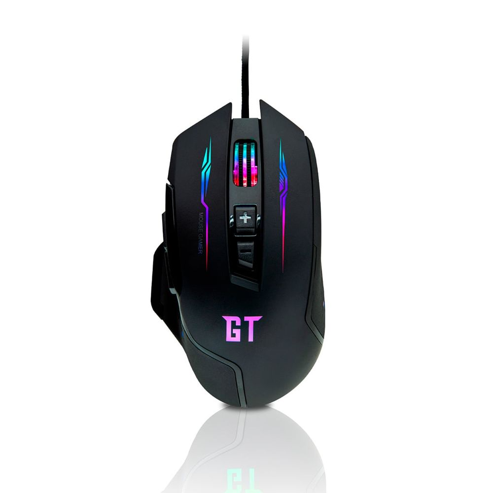

$199 |
Mouse Gamer |
|---|---|
|  |
DescriçãoMouse Gamer Redragon Storm Lunar White RGB, 12400DPI, 7 Botões, Branco. LEVE E PRECISO Graças a seu design no estilo colméia, o Storm Lunar pesa apenas 88g e é equipado com o sensor PIXART PWM 3327. Além de ser pintado e texturizado com o exclusivo branco da linha Lunar White. ERGONÔMICO Você ficara surpreso com o conforto encontrado ao pegar o Storm Lunar. |